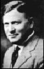

| Haga clic aquí para la versión inglesa | ||||||||||||||||||||||||||||||||||
| Haga clic aquí para la versión francesa | ||||||||||||||||||||||||||||||||||
| ||||||||||||||||||||||||||||||||||
|
Según algunos libros de referencia, aún se cree que "Desiderata" ha sido "encontrado" en La Vieja Iglesia de St. Paul en Baltimore y que data de 1692. Fue realmente escrito en los primeros años de la década de 1920 por Max Ehrmann (1872-1945), un abogado de Terre Haute, Indiana. Como la mayoría de las escrituras de Ehrmann, "Desiderata" no llamó mucho la atención no mientras él vivió; tres años después de su muerte, su viuda publicó éste y algunos de sus otros trabajos en "Los Poemas de Max Ehrmann" (p.165). Durante la estación Cuaresmal de 1959 o 1960, Rev. Frederick Kates, el rector de La Iglesia de St. Paul en Baltimore, Maryland, usó el poema en una colección de material devoto mimeografiado para su congregación. Alguien lo reimprimió más tarde, separándolo de su crédito original, describiéndolo erróneamente como habiendo sido encontrado en la vieja Iglesia de St. Paul en el año 1692, malinterpretando el membrete de la iglesia. El año 1692 es de hecho la fecha de fundación de La Iglesia de St. Paul y no tiene nada que ver con el poema. "Desiderata" fue propiedad registrada por Max Ehrmann el 3 de enero de 1927 (derechos de propiedad literaria federal NO. 962402). El derecho de propiedad literaria se dejó a su viuda, Bertha K., Ehrmann, a su muerte en 1945. Fue renovado en 1948 y 1954 por Bertha y legado a su sobrino, Richmond Wight, a su muerte en 1962. En 1971, Richmond Wight asignó el derecho de propiedad literaria para el valor a la Cía. Crescendo Publishing Co. encabezada por Robert Bell. Libros que contienen "Desiderata" son publicados por Crescendo Publishing Co y pueden obtenerse en las librerías. Otros permisos deben ser obtenidos del dueño del derecho de propiedad literaria - Robert L. Bell, 427 South Shore Drive, Sarasota, Florida 34234. El uso escrito de "Desiderata" sin permiso se cree que está generalmente cubierto bajo las leyes de dominio público porque Max Ehrmann, aunque habiendo afianzado derechos de propiedad literaria legal y renovado los mismos, nunca lo hizo apropiadamente o de forma alguna adjuntó anuncio de su derecho de propiedad literaria a las copias de "Desiderata" que él emitió para el dominio público. Esto se comprobó en 1975 cuando la compañía Crescendo instituyó un pleito, Bell v. Combined Registry Co. contra una compañía que publicó "Desiderata" sin el permiso. La corte falló a favor de la demandada debido al error de Ehrmann de no adjuntar apropiadamente el anuncio de su derecho de propiedad literaria a las versiones de dominio público del poema.
Las fuentes: Fred D. Cavinder, "Desiderata", TWA Ambassador, Aug. 1973, pp. 14-15  Max Ehrmann El cartel de la caligrafía a la cima de la página es por Sherrie Lovler. Podría gustarle visitarla el sitio para ver esta ventaja sus otras creaciones caligráficas encantadoras. Art Posters de Canadá tiene esto el cartel. Una fuente excelente de información en la paternidad literaria, derechos de propiedad literaria e historia de Desiderata puede encontrarse adelante Volkert Braren sitio que incluye un la fotografía de la Parroquia de St.Paul, Baltimore, y el material impreso proporcionadas por la Parroquia. Desiderata están disponibles para la compra en empastado a Amazon.com, o Barnesandnoble.com, ilustrado por Sally Sturman. "Este libro clásico de inspiración ha vendido más de 190,000 copias y ha continuado dando el consuelo y alegrar al nuevo año de los lectores después de año". En Dic 1971 Les Crane el registro de juego de Desiderata a la música (en inglés) era #8 en los mapas y lo ganó un Premio de Grammy (incidentemente, él no pudo aprovecharse la de los 1975 Bell v. Combined Registry Co. la decisión arriba expresado y fue obligado a compartir los derechos de autor con la familia de Ehrmann debido a las violaciones del derechos de propiedad literaria). Está ahora disponible como un CD audio por Amazon.com. También a Amazon.com es Arturo Benavides, mientras cantando un version Español. Por favor visite el sitio de Art and Poetry para un más aun la historia exhaustiva de los orígenes de Desiderata. Visite Richie's CyberLibrary para una historia más completa de cómo Desiderata vinieron a estar en el dominio público. Finalmente visite otro sitio de Desiderata que cubre la historia de los orígenes de Desiderata y algún trivia gusta "es 'se alegre' o 'se cauto'"?. |
{kind=link}